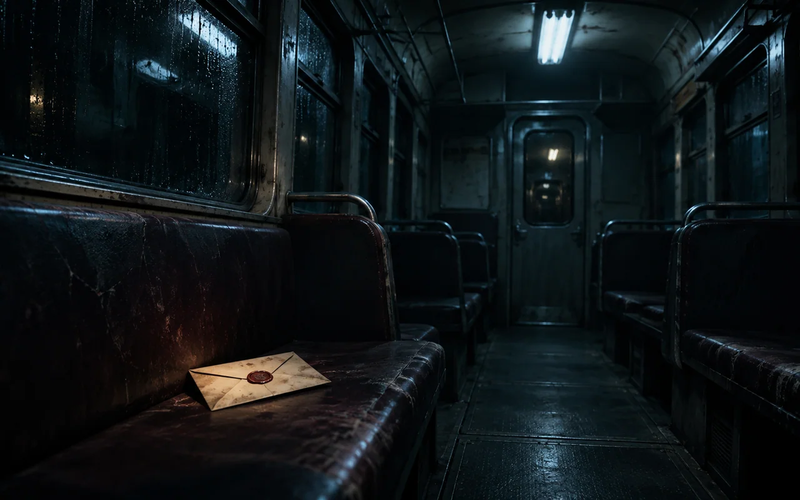

V6.7 · РЕАЛИСТИЧНАЯ БОЛЬНИЦА · 13 НОВЫХ КАДРОВ

НЕ ОБОРАЧИВАЙСЯ
23:47 · ВАГОН 0
00:10
🏥 ОТДЕЛЕНИЕ B-13◷ 03:33● ПОД НАБЛЮДЕНИЕМ
01 · ПРОБУЖДЕНИЕ
Последний поезд
Крик: nick121087 / Wikimedia Commons, CC0. Изображение: оригинальная генерация для «За гранью».